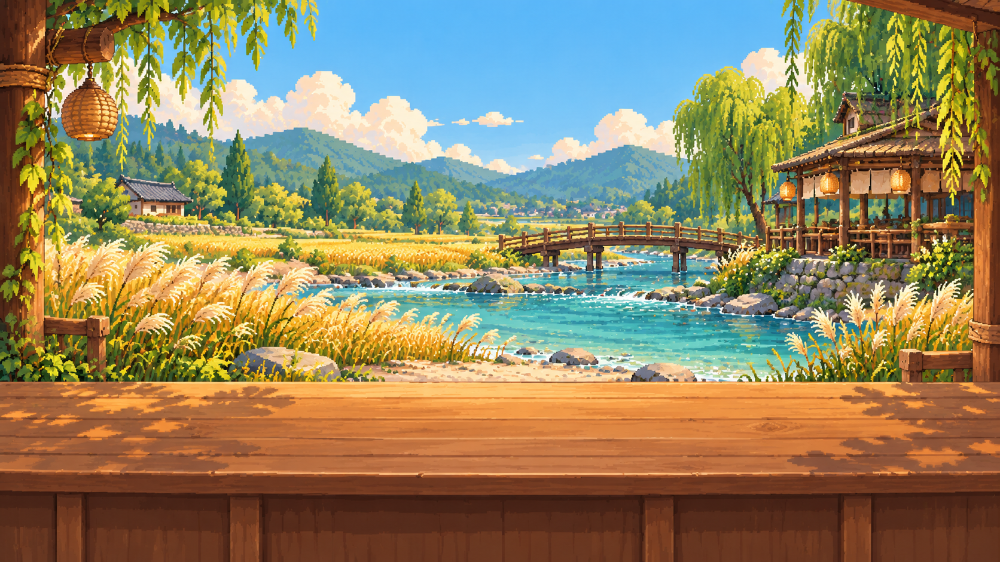
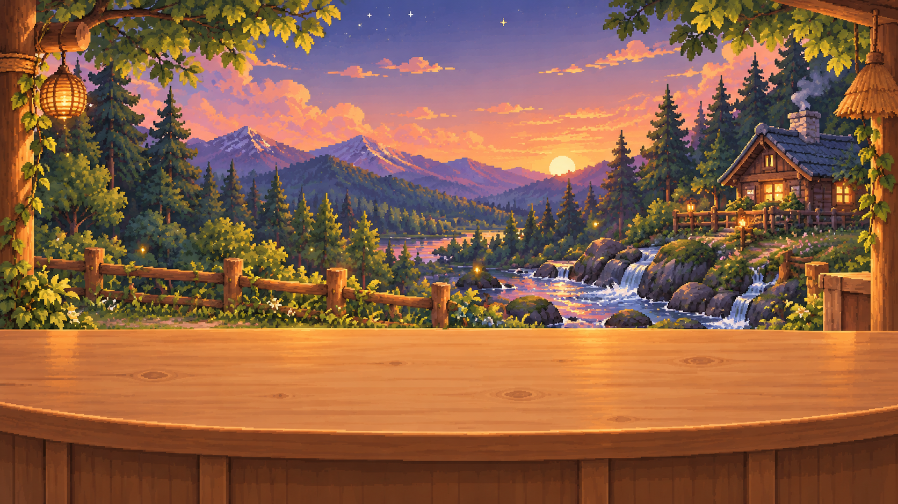
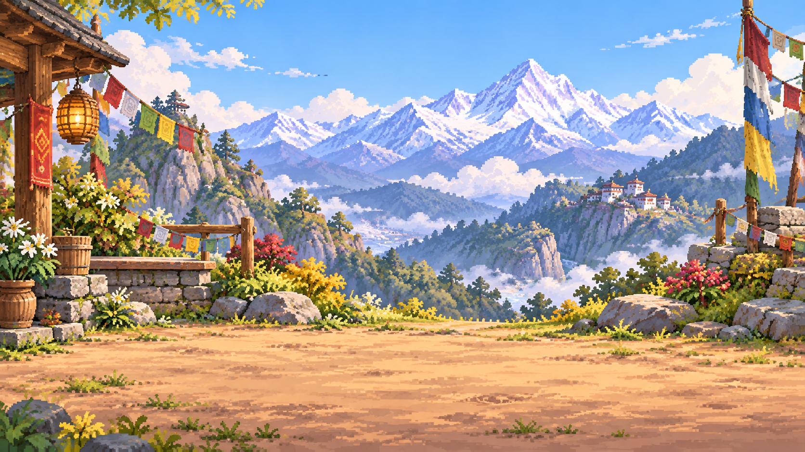
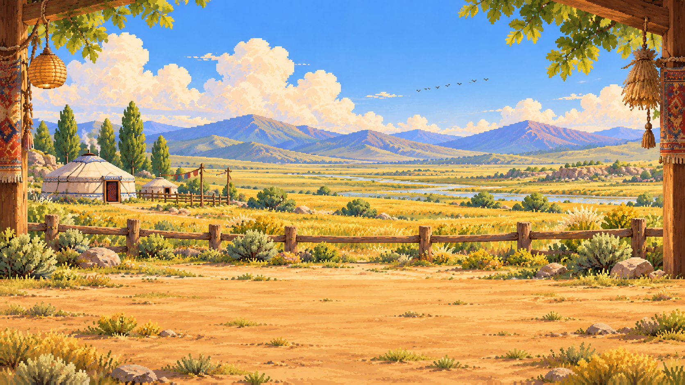
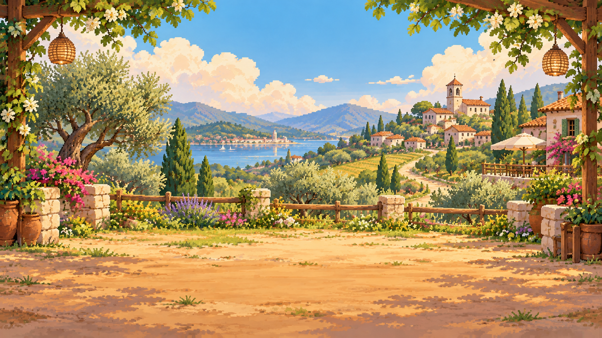
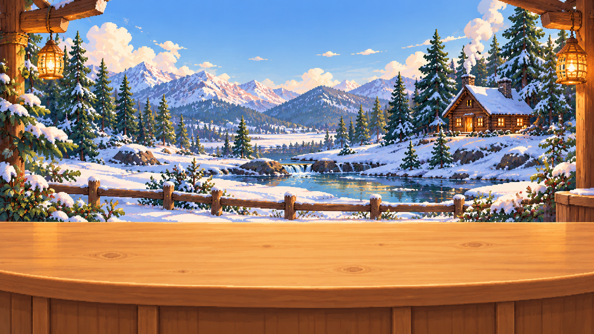
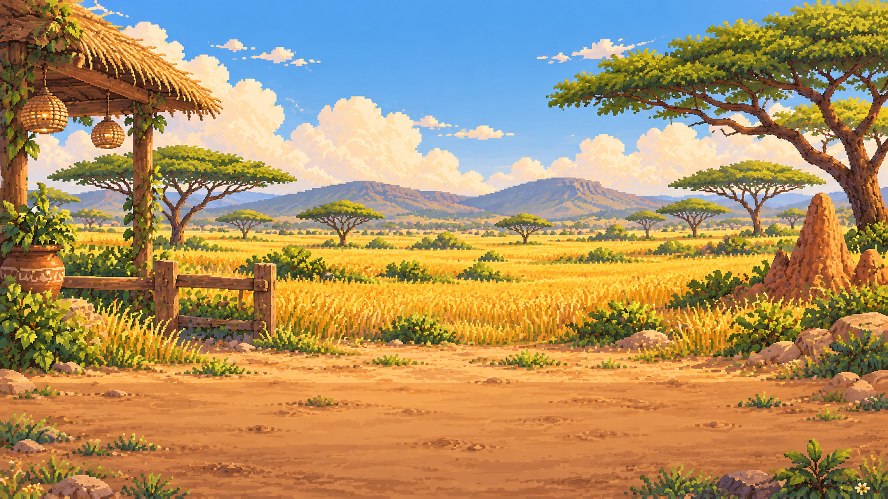
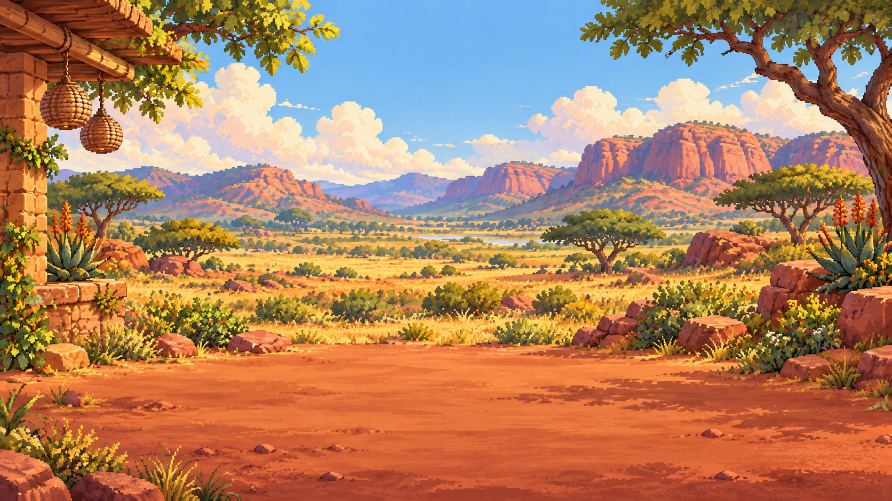
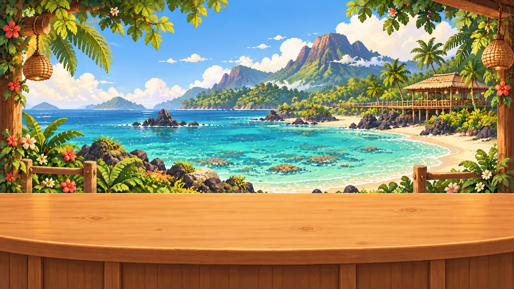

세계의 때까치 식당
기존 WORLD 1 + 새 풍경 WORLD 2–10 · 0.8.4.6
 WORLD 1 · 농경지의 아침
WORLD 1 · 농경지의 아침
WORLD 2 · 강을 따라서
WORLD 3 · 산과 밤
WORLD 4 · 히말라야
WORLD 5 · 바람의 대초원
WORLD 6 · 유럽과 지중해
WORLD 7 · 북쪽 숲과 들
WORLD 8 · 동아프리카
WORLD 9 · 남아프리카
WORLD 10 · 섬의 식당